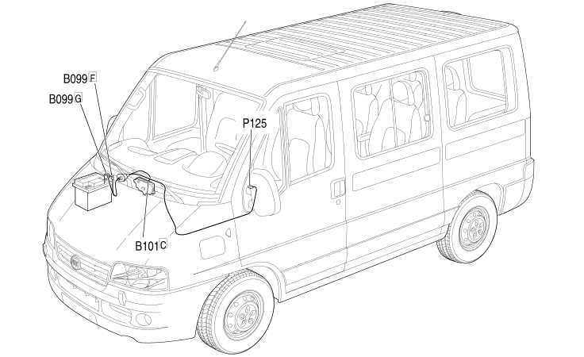

110 OPTIONAL JUNCTION UNIT UNDER DASHBOARD BRIDGE
- Path
- Electrical equipment > 2 WIRING > 110 OPTIONAL JUNCTION UNIT UNDER DASHBOARD BRIDGE
- Kind
- wiring harness
- Applies to
- all engines; all production periods
- Interactive page
- https://sloeber94.github.io/elrnDB-fDct/en/#/244002310
Applies to: engines: 2.0 JTD 8V, 2.3 JTD 16V, 2.8 JTD 8V; all production periods

Topics that link to this page (5)
- A001D BATTERY (OPTIONAL JUNCTION UNIT UNDER DASHBOARD BRIDGE)
- B099F MAXI FUSE BOX ON BATTERY (OPTIONAL JUNCTION UNIT UNDER DASHBOARD BRIDGE)
- B099G MAXI FUSE BOX ON BATTERY (OPTIONAL JUNCTION UNIT UNDER DASHBOARD BRIDGE)
- B101C OPTIONAL JUNCTION UNIT UNDER THE DASHBOARD (OPTIONAL JUNCTION UNIT UNDER DASHBOARD BRIDGE)
- P125 TRANSFORMER SOCKET (OPTIONAL JUNCTION UNIT UNDER DASHBOARD BRIDGE)